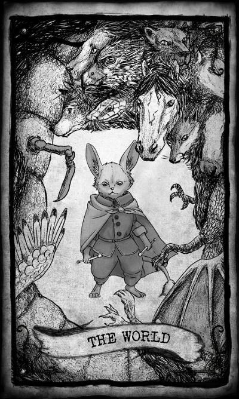

Twenty-two cards.
Twenty-two archetypes.
Twenty-two stories.
Arcana ✶ A Tarot Anthology collects stories from around the furry subculture to highlight the stories within and around the cards of the Major Arcana, those named cards within the divinatory Tarot deck.
Arcana is now available!
About
It’s said that the shuffling of the cards is the earth, and the pattering of the cards is the rain, and the beating of the cards is the wind, and the pointing of the cards is the fire. That’s of the four suits. But the Greater Trumps, it’s said, are the meaning of all process and the measure of the everlasting dance.
— Charles Williams in The Greater Trumps
No one is quite sure when the Tarot as we know it came into being.
Perhaps it was a slow evolution. A process of amalgamation over the years, bringing in disparate aspects of games and fortune telling, which led to the creation of the deck of seventy-eight cards. A bit of symbolism here, a touch of mechanics there, and a generous dollop of creative thinking spread out over time.
Beyond the fifty-six cards of the suits—the swords, pentacles, wands, and cups—there are twenty-two additional cards. These are the Major Arcana, or the trumps. They have no suit, but instead bear names. Beginning with The Fool, they work their way through a set of images—The Hermit, Justice, The Tower, The Moon—until they wind up at The World.
These cards are where the meaning is richest. The Major Arcana show images and people, each mapping directly to an archetype, each calling out to some deeper meaning within us.
Sometimes these cards are taken to represent individuals: The Emperor and his iron will. They can also be taken to mean events: The Tower and its sense of destruction. Or perhaps they wind up referring to social themes: Temperance and it's gentle urging towards moderation. Each bears meaning, of course, and that meaning can be applied to a situation in many ways.
These cards of the Major Arcana, taken as a whole, have a meaning in their own right, a story told from the innocence of The Fool to the wisdom of The World. The Tarot is poignant in that way: it represents the cycle of our life, and all of the myriad cycles within.
Arcana, as an anthology of furry literature, follows along that path. For each card, a story, and for each story, an archetype that drives the characters and their actions. The cards may show up in the story, or the story may be driven by the images.
We invite you to join us, to join writers from all over the furry subculture and from all walks of life, in the lived experiences driven by these meanings.
Come with us and divine the meaning of all things from within Arcana.
Table of Contents
| Card | Title | Author | |
|---|---|---|---|
| 0 | The Fool | The First Step | Madison Scott-Clary |
| I | The Magician | Cat's Paw | Mut |
| II | The High Priestess | Catalyst | Kristina "th'buni" Tracer |
| III | The Empress | Domestic Violence | Frances Pauli |
| IV | The Emperor | Joseph and the Technicolor Fur Coat | Stephen Coghlan |
| V | The Hierophant | The Lunatic | C. M. Averin |
| VI | The Lovers | Love Not Misplaced | Hypetaph |
| VII | The Chariot | Avoiding the Subject | TJ Minde |
| VIII | Strength | Chasing the Dragon | Baxil |
| IX | The Hermit | While It Lasts | John Kulp |
| X | Wheel of Fortune | The Dragon of Volcano Island | Madison Keller |
| XI | Justice | Red | Searska GreyRaven |
| XII | The Hanged Man | Unbound | Chris "Sparf" Williams |
| XIII | Death | St. John's Bridge | Rose LaCroix |
| XIV | Temperance | A Temper for Order | Frances Pauli |
| XV | The Devil | Faux | Atrum |
| XVI | The Tower | The Storm | J. S. Hawthorne |
| XVII | The Star | No Peas in My Garden | Dan Leinir Turthra Jensen |
| XVIII | The Moon | Who Fights With Monsters | Kyell Gold |
| XIX | The Sun | Remembering Sisyphus | George Squares |
| XX | Judgement | A Time for Giving | Allison Thai |
| XXI | The World | The Unification of Worlds | Mary Lowd |